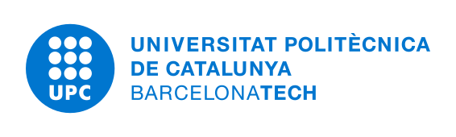

Versió web · Barcelona, Catalunya
Jaume Mora i Ladària
Màster en Visió per Computador · Imatge mèdica i aprenentatge profund
Treballo en visió per computador aplicada a la imatge mèdica, des de l’entrenament de models fins a l’anàlisi dels errors. M’interessen els Vision Transformers, els models fundacionals, l’aprenentatge multimodal i la IA clínica fiable.
Experiència de recerca i tècnica
Juny–agost de 2026
Assistent de recerca en IA i aprenentatge multimodal
SCOPIA · Hospital Universitari Son Espases i UIB
Vaig desenvolupar un pipeline en PyTorch per classificar infeccions en 394 imatges de ferides, comparar vuit arquitectures CNN i Transformer i estudiar els falsos negatius, el desequilibri de classes i l’ús de dades de qüestionaris clínics.
Veure el projecte REDSCAR →Setembre de 2025–juny de 2026
Becari en visió per computador

Vaig migrar una trentena de pràctiques de visió per computador de MATLAB a Python amb NumPy, OpenCV i Matplotlib, i en vaig mantenir unes 90 versions en català, castellà i anglès.
Novembre de 2024–gener de 2025
Avaluador d’IA generativa
Outlier
Vaig avaluar la precisió factual, el raonament i el seguiment d’instruccions de les respostes de models de llenguatge. Vaig analitzar errors recurrents com les afirmacions sense suport, les contradiccions i el raonament incomplet.
Formació
Setembre de 2026–actualitat
Màster en Visió per Computador
UAB, UB, UPC, UPF i UOC
Programa interuniversitari de 60 ECTS, impartit en anglès, centrat en visió per computador, aprenentatge profund, anàlisi d’imatges i metodologia de recerca.
2022–2026
Grau en Intel·ligència Artificial
Universitat Politècnica de Catalunya
Treball de fi de grau (9,5/10). Vaig desenvolupar un sistema de visió per computador i ROS 2 per controlar un TurtleBot3 en temps real amb gestos de la mà i el vaig avaluar amb 600 proves.
Veure el projecte de robòtica →Competències tècniques
- Visió per computador i aprenentatge profund
- PyTorch, OpenCV, Vision Transformers, CNN, transfer learning
- Computació per a la recerca
- Linux, SSH, SLURM, MareNostrum, BOADA, Docker
- Programació i enginyeria
- Python, C++, SQL, MATLAB, Git, ROS 2
Idiomes
- Català i castellà · Natius
- Anglès · Professional avançat
- Alemany · Bàsic